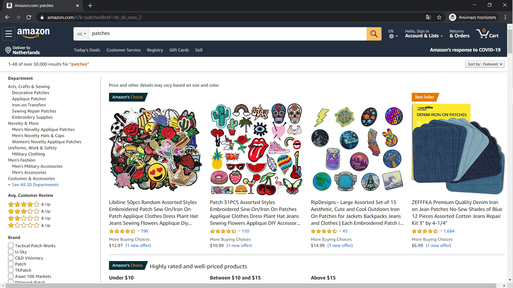
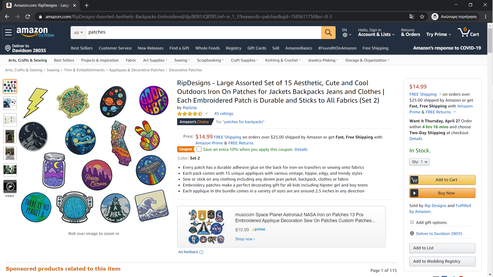
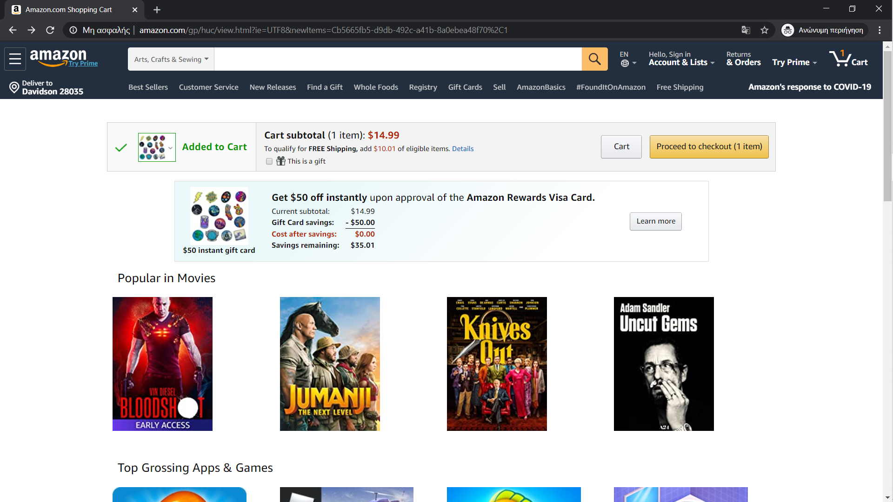
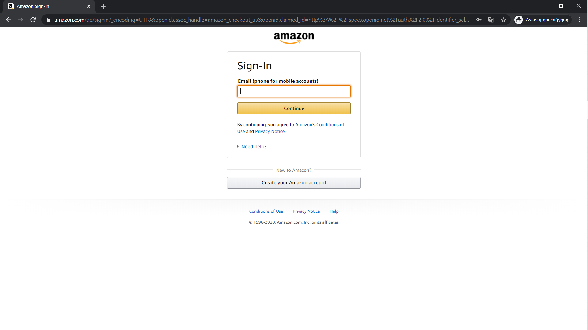
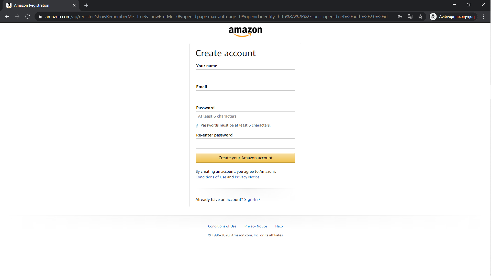

I asked Alexia to search and find a product she is interested in. Alexia proceeded and searched for patches.
The first thing I noted, is that Alexia was scrolling up and down the screen constantly while glancing over both sides of the screen quickly. When questioned how she processed the information, the answer was that bold letters allowed to notice key words
I asked Alexia to explore the information of the product as usual.
I noted that Alexia first hovered over the photos and quickly glanced back and and forth at all of them. Also, when discussing Alexia's experience, it was mentioned that although she glanced over all of the photos, she mostly focused on the first one, as the it 'had everything' she needed. Furthermore, she suggested that the combination of orange and blue and the bold price in the middle of the screen, directed her attention to that. Another important note is that when she clicked the product, she didn't scroll down, for more info, when asked why, she replied that the main page had everything she was looking for. After my question, she scrolled down and I immediately noticed that she was captivated by the suggestions, especially by related to patches products with flashy colors.
I asked to add the product to her cart.
Alexia very quickly clicked the button. When asked about her quick response, she explained that the bright 'popping off' colors drew her attention since she visited the website.
I asked her to pretend like she was buying the product. After clicking the Proceed to checkout button, she saw the following screen to which she clicked Create your own Amazon account'
Alexia once again very quickly clicked the button. When asked her thoughts on this page, she replied that the emptiness of the page helps direct her attention to what is important, like the button.
I asked her to create an account and noticed her reaction. She hastily filled the information and rushed to finish the sign-up.
Once again, she suggested that the emptiness and clear design allowed her to focus on filling in the information. Overall, when asked about her feeling and thoughts towards the website and her experience, she replied: "I feel like the website is old, explaining it felt like it was built years ago and never re-polished." Nonetheless, she agreed on the functionality of the website.
I think that this test, highlighted a couple of important points. First off, it underlined the importance of colors, as Alexia was drawn to the flashy colors of the recommendations, the bold letters, the contrasting orange and blue. More precisely, it underlines the impact color choice can have on the attention of the user. Moving on, another important point is that users (speaking with evidence Alexia's behavior and my own) tend to quickly scroll, and change their attention. This indicates that the program, including its content. Lastly, I noticed how empty space, aka the background of the page when creating an account, can be used to direct attention to whatever you consider important, in Amazon's case the Create your Amazon account button.